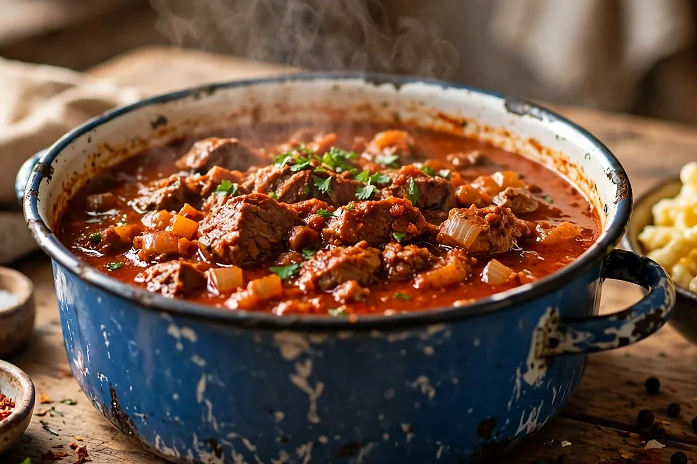

Rindergulasch – zart geschmort mit viel Zwiebel und Paprika
Gutes Gulasch braucht nur zwei Dinge: gute Zutaten und ein bisschen Geduld. Viele Zwiebeln und edelsüßes Paprikapulver machen die Soße von allein sämig und kräftig. Bei uns gibt es Gulasch am liebsten, wenn die ganze Familie am Tisch sitzt – der Topf wird immer leer.

Inhaltsverzeichnis
Zutaten
Zubereitung
- Das Fleisch trocken tupfen. Das Öl in einem schweren Topf stark erhitzen und das Fleisch in zwei Portionen rundherum scharf anbraten. Herausnehmen und salzen.
- Die Zwiebeln im Bratensatz bei mittlerer Hitze ca. 10 Minuten dunkel rösten, dabei immer wieder umrühren. Knoblauch und Tomatenmark kurz mitrösten.
- Den Topf vom Herd nehmen, das Paprikapulver unterrühren und sofort mit dem Essig und der Brühe ablöschen – so wird das Paprikapulver nicht bitter.
- Das Fleisch samt ausgetretenem Saft zurück in den Topf geben. Lorbeerblatt und Majoran dazugeben und zugedeckt bei kleiner Hitze ca. 2 Stunden schmoren, bis das Fleisch butterzart ist.
- Wer mag, gibt in den letzten 30 Minuten die Paprikastreifen dazu. Am Ende das Lorbeerblatt entfernen und das Gulasch mit Salz und Pfeffer abschmecken.
- Heiß servieren – dazu passen Semmelknödel, Spätzle oder einfach ein Stück Brot zum Auftunken der Soße.

Tipp
Die Zwiebeln sind die Soße: Sie zerfallen beim langen Schmoren vollständig und binden das Gulasch ganz ohne Mehl. Nicht an den Zwiebeln sparen – mindestens halb so viel Zwiebel wie Fleisch muss es sein.
📌 Mehr Rezept-Ideen findest du auf unserem Pinterest-Profil:
Lecker Rezepte auf Pinterest
Lecker Rezepte auf Pinterest